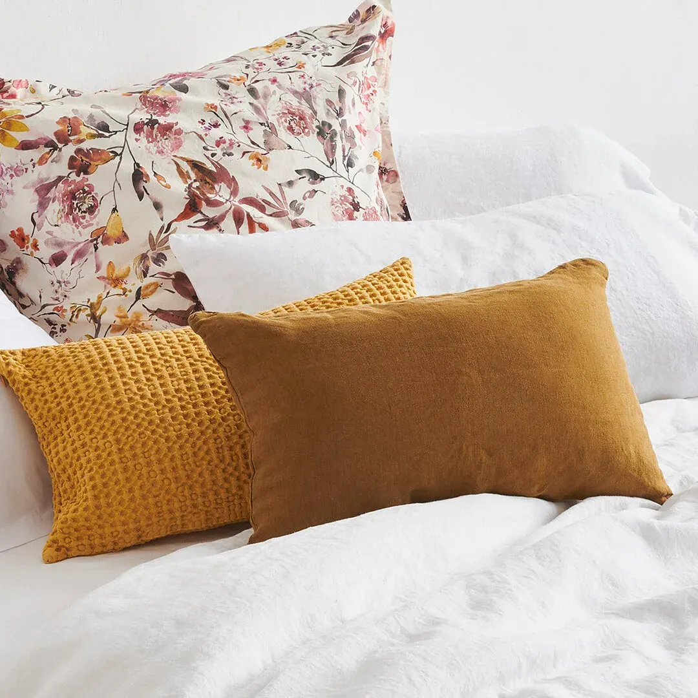

Ropa de cama, el mejor complemento

Ya que duermes tan bien en tu colchón LOMONACO lo ideal es que disfrutes de una experiencia de descanso plena. La base sobre la que reposa éste es imprescindible para que el colchón tenga un rendimiento pleno. Igualmente, hay un elemento fundamental del equipo de descanso, la ropa de cama y abrigo; sin su función insustituible nos sería muy difícil dormir cada noche, ¿o es que nunca has pasado una mala noche porque las sábanas que estabas usando no eran las adecuadas?
Por ropa de cama, entendemos cualquier pieza de la ropa de hogar, que se utiliza para vestir la cama: sábanas y fundas nórdicas, mantas, edredones y faldones. Son tan importantes para nuestro sueño porque son con lo que el cuerpo establece contacto directo mientras se duerme, además protegen del frío.
Propiedades imprescindibles de las sábanas y fundas nórdicas
–Tacto confortable: la trama y la urdimbre (el entramado de hilos que conforman el tejido) dan suavidad a la pieza textil. Además el tratamiento de los filamentos ayuda a la suavidad del conjunto.
–Composición: La materias primas que se utilizan para la fabricación de sábanas y fundas nórdicas aportan cualidades a las piezas como durabilidad, y confortabilidad. Textiles 100% algodón percal o los linos son ideales para un uso continuado; tejidos con esta composición soportan mejor altas temperaturas de lavado (importante si se necesitan coladas a más de 60º por determinadas razones), se secan rápidamente, son fáciles de planchar y además de duraderos.
–Aspecto impecable: directamente relacionado con lo anterior, el algodón es un tejido perfecto, natural, hipoalergénico, transpirable… El lino por su parte, es suave, fácil de lavar, ideal para vestir la cama en cualquier época del año además de ser ropa de cama especial para dar un ambiente rústico al dormitorio.
–Diseño: los diseños elegantes, atemporales y de colores neutros, darán a tu hogar un toque de estilo y alejado de tendencias que pasan de moda rápidamente. Por otro lado, los colores suaves o blancos, evitan el inevitable deterioro prematuro por el desgaste de color.
Ropa de cama de lana merina de LOMONACO
Además del algodón, la lana merina es una materia prima de origen natural muy apreciada por los fabricantes de textiles. Cada hebra de la lana, está compuesta por miles de filamentos suaves y elásticos que hacen que el resultado final sea mullido, cálido y esponjoso, además podemos beneficiarnos de esta fibra mientras dormimos por otros muchos motivos.
Beneficios de la lana merina
-Aislante térmico, mantiene la temperatura constante.
-La lana merina, absorbe la humedad sin humedecerse.
-Antibactericida, gracias a la lanolina, una grasa que contiene.
Cubre colchón de lana merina
Necesitamos, a la vez que mantener el colchón como el primer día, un cubre colchón que evite la transferencia térmica. Para ello, el cubrecolchón de Lana Merina que incorpora LOMONACO en su catálogo, es perfecto.
Ropa de cama y abrigo: Edredones nórdicos
El Edredón Nórdico de LOMONACO está confeccionado incluyendo una banda de tejido tridimensional, que facilita el intercambio térmico, el flujo de aire y la temperatura constante mientras dormimos.
Además su confección tipo “casseten” evita zonas frías y el desplazamiento del relleno y apelmazamiento por las superficie del nórdico, manteniéndolo siempre uniforme.
Cuidados de la ropa de cama
Además de elegir ropa de cama de buena calidad, debemos intentar siempre darle los mejores cuidados para mantenerla como el primer día:
–Sábanas y fundas nórdicas: para quitar el apresto inicial, una sensación que desagrada a muchos, pueden lavarse antes de usar. Posteriormente sería conveniente, lavarlas una vez a la semana, con jabón neutro (y ojo con temperaturas elevadas).
–Mantas, edredones y cubrecolchones de lana merina, deben llevarse al menos una vez al año a lavar en seco. Además, una vez terminada la temporada, conviene guardar la manta o edredón nórdico en la funda que nos proporciona el fabricante a la hora de la venta. Podemos protegerlos así de la acumulación del polvo.
-Para guardar las sábanas, un truco perfecto es organizar todas las piezas dentro de la bajera. Tendremos siempre localizado el juego de sábanas completo, además de proteger las fundas de almohada y la encimera con la sábana bajera.